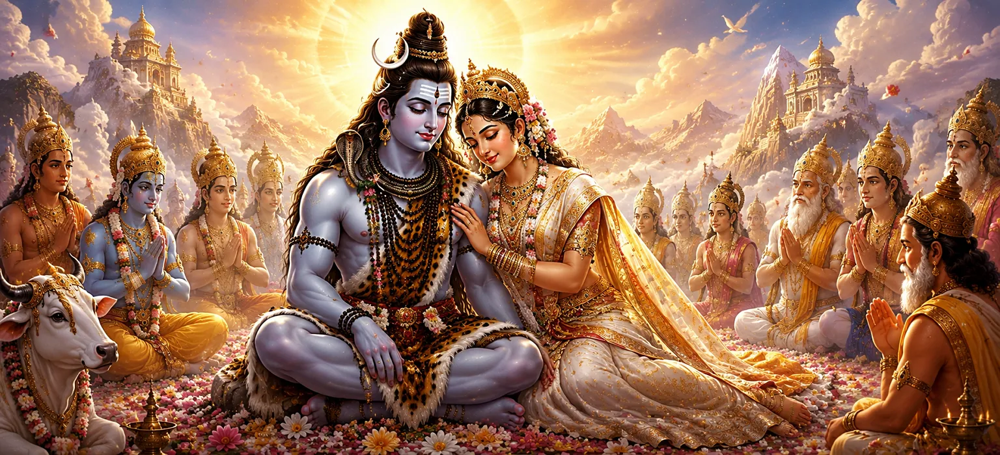

यह पवित्र अध्याय भगवान शिव और देवी सती के मिलन की दिव्य महिमा का जश्न मनाता है। उनका विवाह एक दिव्य घटना से कहीं अधिक था - यह शिव और शक्ति, चेतना और ऊर्जा, त्याग और भक्ति के शाश्वत सामंजस्य का प्रतीक था। उनके पवित्र साहचर्य के माध्यम से, ब्रह्मांड को संतुलन, आध्यात्मिक ज्ञान और दिव्य अनुग्रह का आशीर्वाद मिला।
शिव और सती का मिलन शिव और शक्ति के बीच अविभाज्य संबंध को दर्शाता है। भगवान शिव सर्वोच्च चेतना का प्रतीक हैं, जबकि सती दिव्य ऊर्जा का प्रतीक हैं। साथ में, वे पूरे ब्रह्मांड में सृजन, संरक्षण और परिवर्तन की नींव बनाते हैं।
हालाँकि शिव सांसारिक जीवन से अलग थे और सती का जन्म एक शाही घराने में हुआ था, लेकिन उनके रिश्ते ने पूर्ण सद्भाव प्रदर्शित किया। वे एक-दूसरे का पूरा सम्मान करते थे और उद्देश्य में एकजुट रहे, जिससे पता चला कि सच्चे रिश्ते आपसी समझ और आध्यात्मिक एकता पर आधारित होते हैं।
देवताओं ने शिव और सती के मिलन पर खुशी मनाई क्योंकि इससे सभी प्राणियों का कल्याण सुनिश्चित हुआ। उनकी दिव्य उपस्थिति ने सृष्टि में स्थिरता लायी और संतों और भक्तों को धर्म, भक्ति और आत्म-साक्षात्कार के मार्ग पर चलने के लिए प्रेरित किया।
शिव और सती के बीच का बंधन सिखाता है कि आध्यात्मिक विकास भक्ति, विश्वास और निस्वार्थ प्रेम से मजबूत होता है। उनके मिलन से पता चलता है कि दिव्य साहचर्य आत्मा को सांसारिक सीमाओं से ऊपर उठाता है और सर्वोच्च सत्य के करीब लाता है।
शिव और शक्ति मिलकर ब्रह्मांडीय व्यवस्था को बनाए रखते हैं और पूर्णता का प्रतिनिधित्व करते हैं।
सच्चा सामंजस्य तब उत्पन्न होता है जब भक्ति और ज्ञान एक हो जाते हैं।
निस्वार्थ प्रेम और आपसी सम्मान आध्यात्मिक रिश्तों को मजबूत करते हैं।
भक्त शिव और सती को अटूट आस्था और भक्ति के आदर्श उदाहरण के रूप में देखते हैं। उनका पवित्र रिश्ता साधकों को हृदय की पवित्रता और ईश्वर के प्रति दृढ़ समर्पण पैदा करने के लिए प्रेरित करता है।
शिव और सती के मिलन की महिमा पीढ़ियों तक भक्तों को प्रेरित करती रहती है। उनकी कहानी एक शाश्वत अनुस्मारक बनी हुई है कि दिव्य प्रेम, विश्वास और आध्यात्मिक एकता सभी सांसारिक मतभेदों को पार करती है और हमेशा के लिए बनी रहती है।
शिव और सती का मिलन सिखाता है कि सच्ची संतुष्टि तब आती है जब आत्मा खुद को दिव्य ज्ञान और भक्ति के साथ जोड़ लेती है। उनका पवित्र बंधन हमें याद दिलाता है कि आध्यात्मिकता में निहित प्रेम मुक्ति और शाश्वत शांति का मार्ग बन जाता है।
शिव और सती के दिव्य मिलन का सभी देवताओं और दिव्य प्राणियों ने सम्मान किया। उन्होंने पवित्र जोड़े को प्रार्थना, भजन और आशीर्वाद दिया, उनके मिलन को पूरे ब्रह्मांड के लिए शक्ति और सद्भाव के स्रोत के रूप में मान्यता दी। जैसे ही देवताओं ने शिव और शक्ति के बीच शाश्वत बंधन की महिमा की, स्वर्ग स्तुति से गूंज उठा।
शिव और सती के बीच का रिश्ता भक्तों को भक्ति, विश्वास और आध्यात्मिक एकता का महत्व सिखाता है। उनका पवित्र साथ दर्शाता है कि सच्ची ताकत तब पैदा होती है जब ज्ञान और भक्ति एक साथ काम करते हैं। सत्य के चाहने वालों के लिए, उनका मिलन व्यक्तिगत आत्मा और परमात्मा के बीच सामंजस्य का एक कालातीत उदाहरण है।
"जहां शिव और शक्ति एकजुट होते हैं, सद्भाव, ज्ञान और दिव्य कृपा पूरी सृष्टि में प्रवाहित होती है।"
शिव और सती के दिव्य मिलन के बाद सामने आने वाली पवित्र घटनाओं की खोज जारी रखें।